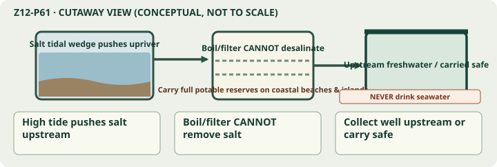

Z12-P61 · Extreme environments · New manuscript
Protect freshwater supplies from brackish tidal mixing along coastal streams
Avoid collecting salty brackish water from tidal estuaries and recognize that standard boiling or filters cannot desalinate seawater.
When it applies · Coastal trails, island camps and ocean-adjacent river mouths where freshwater creeks meet salt tides.
Equipment · Adequate carried freshwater reserve, topo map showing tidal elevation and validated microbial treatment for confirmed freshwater only.

Actions
- Understand that ocean tides push dense salty water far upstream inside flat coastal rivers and estuaries—drinking salty or brackish water worsens dehydration rapidly, and standard boiling, bleach and portable camp filters CANNOT remove dissolved salt (boiling evaporates freshwater and makes salty water even saltier!).[X15, W01, W22]
- A waterfall, location upstream or low tide does not verify freshwater or rule out other contaminants. Carry a known potable supply or use an authority-confirmed source.[W01, X15, ED]
- Carry full potable freshwater reserves for coastal island and barrier-beach trips where surface water is brackish or absent.[W14, X15, ED]
Failure recognition · Boiling estuarine river water near a coastal beach expecting boiling to desalinate it, producing concentrated brine that worsens dehydration.[W01, W22, X15]
Verify · Confirm any coastal stream collection sits clearly above high-tide reach and remains sweet freshwater before applying microbial treatment.[X15, W09, ED]
Stop or change course · Never drink seawater or brackish tidal water under any circumstances; rely on carried freshwater reserves, official supplies or early coastal exit.[W01, W22, X15]
Evidence and editorial notes
- W01 · CDC · How to Make Water Safe in an Emergency (2024-09-19)
- Section: Water with fuel or toxic chemicals in it · Conditions: Suspected fuel, toxic chemicals or radioactive contamination
Support: Use a different safe supply. Standard boiling and microbial disinfection do not make this water safe.
Limitations: Does not list contaminant-specific lab remediation; applies to emergency consumer decisions only. · Conflicting evidence: None across CDC/EPA emergency guidance.
Editorial note: Used as upstream hard-stop gate prior to any field treatment card. · Specialist reviewer: Drinking-water safety and public health
Primary source · checked 2026-11-24 - W09 · CDC · Water Treatment Options When Hiking, Camping, or Traveling (current web edition)
- Section: Overview and water treatment methods · Conditions: Hiking or camping where no safe source is confirmed
Support: Even clear water can contain germs. Assess the supply and carry safe water or an appropriate treatment method.
Limitations: Visual clarity never detects microbes or dissolved chemical contaminants. · Conflicting evidence: None across CDC/NPS/EPA sources.
Editorial note: Reinforces clarity-is-not-potability invariant across all Z04 cards. · Specialist reviewer: Drinking-water safety and public health
Primary source · checked 2026-11-24 - W14 · CDC · How to Create an Emergency Water Supply (current web edition)
- Section: How Much Water to Store; Rotation · Conditions: Household emergency water reserve planning
Support: Plan at least 1 gallon per person per day for at least 3 days (more for heat, illness, pregnancy, or pets); rotate self-filled water every 6 months.
Limitations: Backcountry active travel demands vary sharply by exertion, temperature, and humidity. · Conflicting evidence: None; household baseline is cited only as a planning floor, not a physiological maximum.
Editorial note: Distinguishes household storage floors from active field hydration demands. · Specialist reviewer: Household preparedness and drinking-water safety
Primary source · checked 2026-11-24 - W22 · US EPA · National Primary Drinking Water Regulations (current web edition)
- Section: National Primary Drinking Water Regulations · Conditions: Surface or groundwater near agriculture, industry, mines, roads, or old plumbing
Support: Regulated drinking-water hazards span inorganic chemicals (lead, arsenic, nitrate), organic solvents, pesticides, radionuclides, and microbes; microbial treatments do not remove dissolved inorganic or organic chemicals.
Limitations: Field observation cannot measure dissolved chemical concentration; laboratory testing is required. · Conflicting evidence: None; underpins strict chemical-rejection boundaries.
Editorial note: Explains why agricultural runoff, mine tailings, and road salt/fuel require source rejection. · Specialist reviewer: Environmental toxicology and drinking-water safety
Primary source · checked 2026-11-24 - X15 · NOAA NOS · Tides and Water Levels Education Tutorial (current web edition)
- Section: Tides and Water Levels > Tidal Range, Cutoffs and Currents · Conditions: Ocean coastlines, sea caves, tidal flats and rocky headlands
Support: Tidal cycles raise water levels rapidly along shallow flats, narrow coves and rocky headlands, trapping hikers against cliffs and generating strong reversing currents in inlets; verify local tide tables before entering coastal routes.
Limitations: Wind-driven storm surge and king tides push water well above normal predicted high-tide marks. · Conflicting evidence: None; pairs with NOAA-COAST.
Editorial note: Grounds tidal-cutoff, headland and mudflat planning cards in Z12. · Specialist reviewer: Coastal navigation and marine safety
Primary source · checked 2026-11-24
Source lineage · NOAA tides and CDC drinking-water safety; new manuscript · Classification · New manuscript.